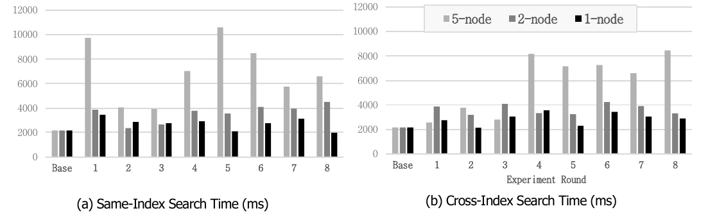

Yoonseok Kang
M.S. Researcher, Chung-Ang University
I study how robot policies can use prior experience to generalize to new goals and adapt from limited data. I work with Dongchul Park in the Data Computing Systems Lab. My earlier research spans distributed search and industrial data systems.

Papers

Operational Data Foundation Framework for Smart Manufacturing in SMEs: Field Implementation and Evaluation
Systems · 2026 JCR Q1 · Top 6.5%

Optimizing Indexing and Search Performance of Elasticsearch for Large-Scale Log Data
Journal of Platform Technology · 2025
Characterization of Distributed Search on Resource-Constrained Edge Clusters
Manuscript under review · 2026
Establishing Reliable IIoT Infrastructure in an SME Factory: LoRaWAN Interference Diagnosis and Legacy Equipment Integration
Manuscript under review · 2026
Search Performance Optimization of Log Data on Elasticsearch
Korea Computer Congress · 2025
HAT: Hadoop Adaptive Tuning via Binary Tree Scheduler for Heterogeneous Edge Clusters
Manuscript under review · 2026
Radar: A comprehensive self-tuning Hadoop framework for low power clusters
Manuscript under review · 2026
TIDE: An Efficient Distributed LLM Prefill System on Low Cost SBC Clusters
Manuscript under review · 2026
PiPP: A Pipeline-Parallel Distributed LLM Inference Platform for Low Cost SBC Clusters
Manuscript under review · 2026
About
Education
- Chung-Ang University
- M.S., Department of Security Convergence, 2025–present
- B.Eng. in Data Science and B.Ed. in Education, 2025
Industry and projects
- TERO
- I build factory monitoring and data systems for small manufacturers.
- ON LOG
- Led a factory IoT deployment with OnGoing.
- Sprout for SeSAC
- Led development and deployment of an education management platform.
Patents and software
Lab recordsKorean patent applications
- Distributed LLM Prefill
- 10-2026-0217817 · Filed
- Distributed LLM Inference on SBC Clusters
- 10-2026-0165843 · Filed
- Hadoop Scheduling with a Binary Tree
- 10-2026-0095501 · Filed
- Distributed Search on Edge Clusters
- 10-2026-0092836 · Filed
- Self-Tuning Hadoop for Low-Power Clusters
- 10-2025-0110496 · Filed
Software registrations
- Pipeline-Parallel LLM Inference on SBC Clusters
- Copyright C-2026-058572 ·
- Software asset ASSET_0016589 ·
- Distributed Search on Edge Clusters
- Copyright C-2026-058729 ·
- Software asset ASSET_0016504 ·
- Hadoop Scheduling with a Binary Tree
- Copyright C-2026-058727 ·
- Software asset ASSET_0016558 ·
- Self-Tuning Hadoop for Low-Power Clusters
- Copyright C-2025-041771 ·
- Software asset ASSET_0015143 ·